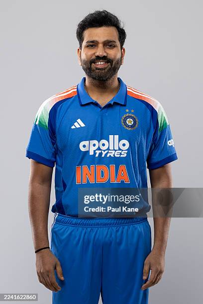

Rohit Sharma is one of the greatest opening batsmen in world cricket. He is famous for his elegant batting style, brilliant captaincy, and ability to score big hundreds. He has led Mumbai Indians (MI) to multiple IPL championships, making him one of the most successful captains in IPL history. He is popularly known as the "Hitman".
| Full Name | Rohit Gurunath Sharma |
|---|---|
| Date of Birth | 30 April 1987 |
| Birth Place | Nagpur, Maharashtra, India |
| Nationality | Indian |
| Role | Opening Batsman |
| Batting Style | Right-Handed |
| Bowling Style | Right-arm Off Break |
| Jersey Number | 45 |
| IPL Team | Mumbai Indians (MI) |
| Category | Record |
|---|---|
| Matches | 270+ |
| Runs | 7000+ |
| Highest Score | 109* |
| Centuries | 2+ |
| Half Centuries | 45+ |
| Fours | 630+ |
| Sixes | 300+ |
Rohit Sharma has represented India in Test, ODI, and T20 International cricket. He is one of the most successful captains and opening batsmen in the world. His batting records include three ODI double centuries and many centuries across all formats. He has helped India win several important ICC tournaments.
Rohit Sharma is one of India's finest cricketers and an inspiration for young players around the world. His elegant batting, outstanding leadership, and ability to perform under pressure have made him a true legend of Indian cricket and the Indian Premier League.